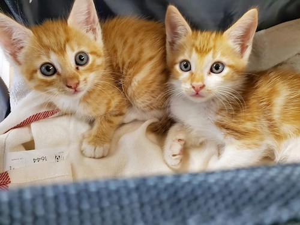

I prefer cats over dogs because I'm lazy cats are lazy, it's the perfect duo. I actually have a dog
and she is just full of energy and I don't want to get a dog and not be able to care for them like they
need to be cared for. Cats don't need to go on walks, and that's great because I don't want to go on walks.
